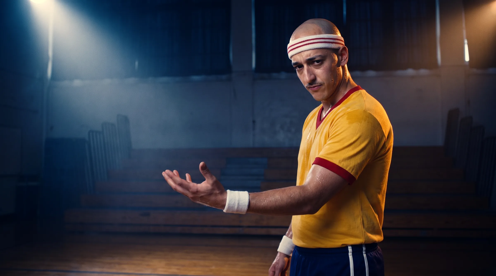
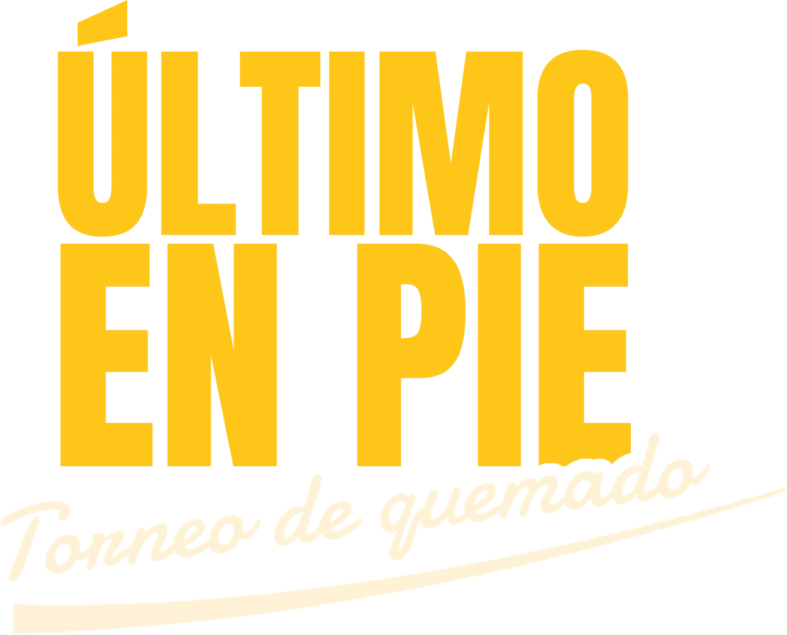
El deporte más serio del mundo.
El quemado, tratado como el deporte más serio del mundo.
El chiste de Dodgeball es ese: un juego de patio de colegio contado con épica de final del mundo.
Red Bull ya tiene ese tono de deporte extremo y lo usamos tal cual. Cámara lenta, música de documental y voz en off grave para un tipo esquivando una pelota de goma.
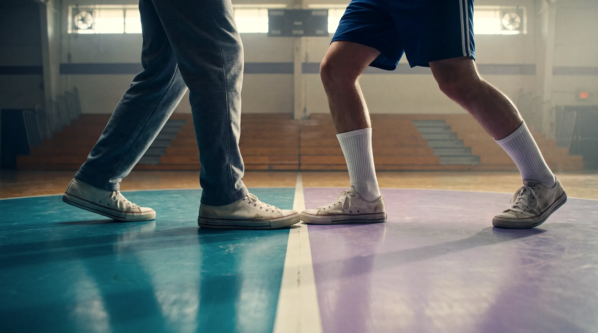
Todos fuimos elegidos (o no) para un quemado en el recreo.
El gancho es el pan y queso. El draft es eso mismo, con producción de NFL.
Pan y queso
- Pan
- Queso
- Pan
- Queso
- Pan
- Queso
- ¡Pisa!
El Pelao es todo.
Es actor y construye personajes. Aparece en todas las piezas, gane el equipo que gane.
-
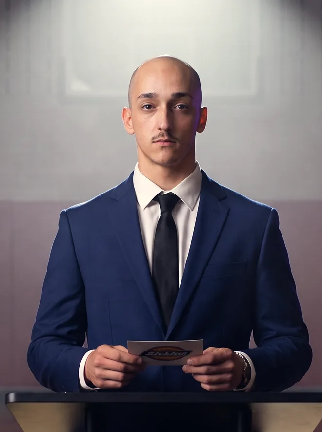
01El Comisionado Conduce el draft y dicta las reglas.
-
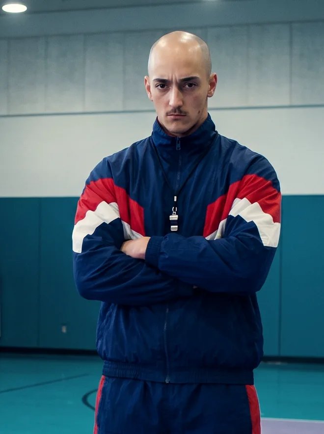
02El Entrenador El veterano, a lo Patches O’Houlihan.
-
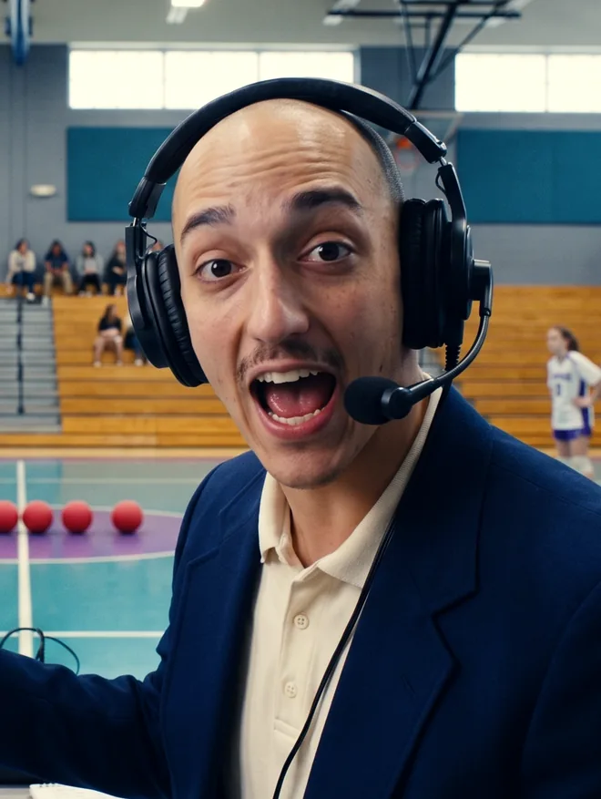
03El Relator Lo cuenta como una final del mundo.
-
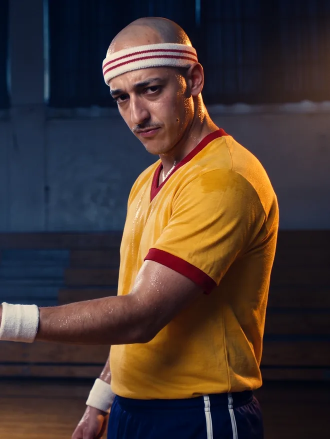
04La Leyenda Vieja gloria del quemado que vuelve del retiro.
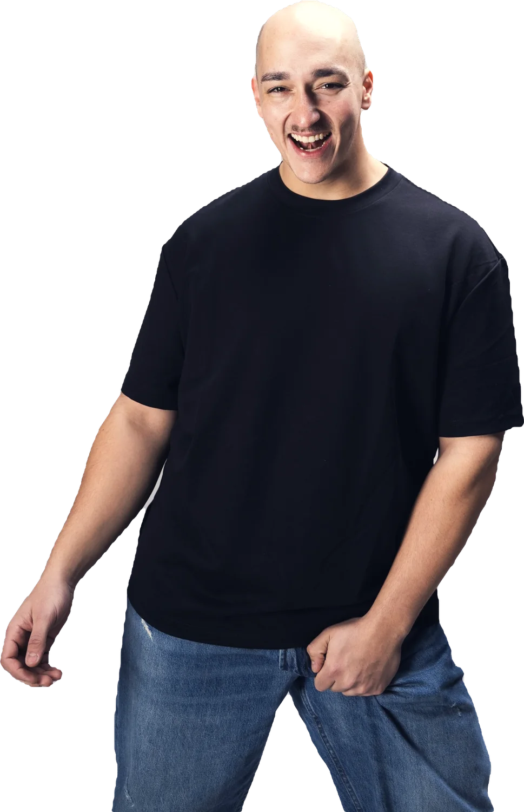
La previa, en capítulos.
Cada capítulo deja una pregunta abierta. Así crece la expectativa hasta el día del evento.
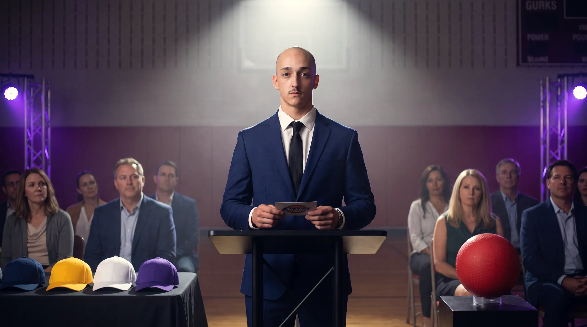
2. El draft.
La pieza central y el anuncio de los cuatro equipos. Una ceremonia con atril, luces y gorritas, con toda la solemnidad.
- El orden se define a pan y queso, filmado como un penal en una final.
- Traiciones. Un capitán le roba a otro el jugador prometido, y esa rivalidad llega hasta el evento.
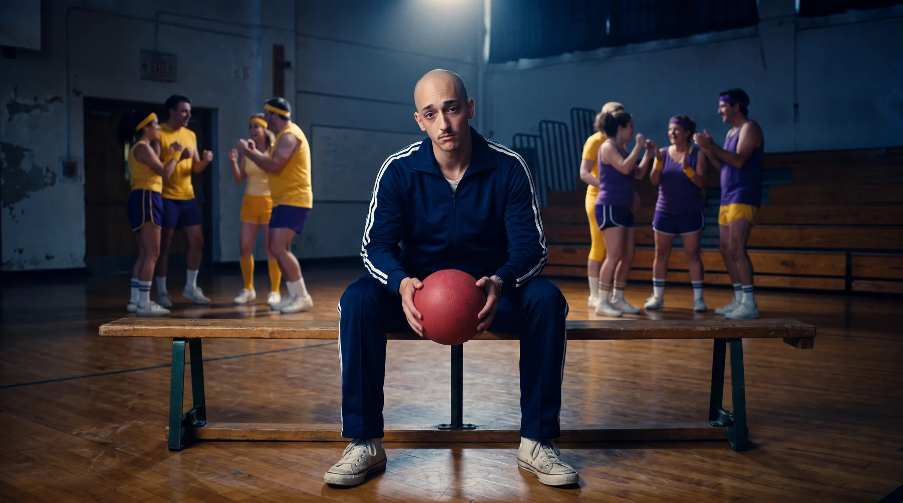
El último elegido.
Queda uno solo sentado y nadie lo quiere. Es el momento más recortable de toda la pieza.
Cada jugador llega con su informe de scouting, con stats ridículas.
Informe de scouting
Ronda 1 · Elección 3
- Esquive
- 9 sobre 10
- Puntería
- 2 sobre 10
- Aguante
- 5 sobre 10
- Llora si le pegan
- Sí
- Se hace el lesionado
- Siempre
- Elegido último en el colegio
- Dos veces
- Dice que la pelota no lo tocó
- Lo tocó
Apto con reservas
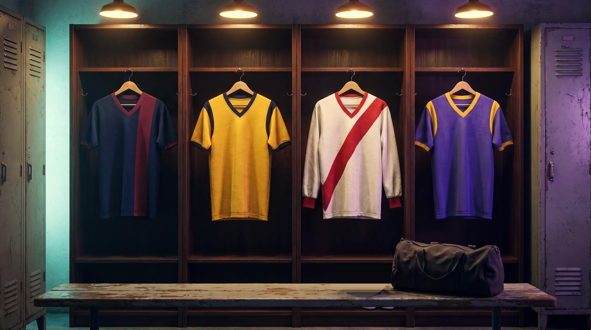
3. Las equipaciones.
Cada equipo muestra la suya como un club de fútbol presenta su camiseta nueva. Los capitanes los definimos con ustedes.
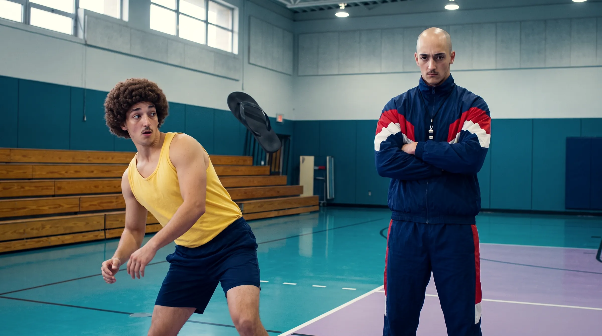
4. La pretemporada.
Cada capitán entrena a su manera. Acá aparece el entrenador veterano, a lo Patches O’Houlihan.
«Si esquivás una ojota, esquivás una pelota.»
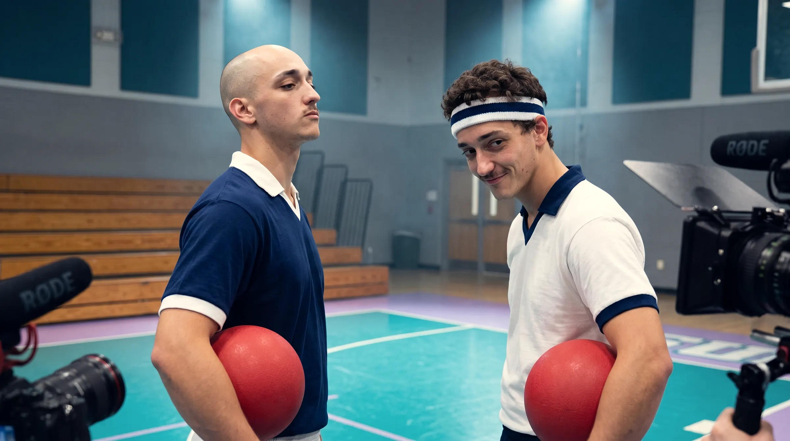
5. El cara a cara.
Conferencia de prensa y pesaje de boxeo, con los capitanes frente a frente.
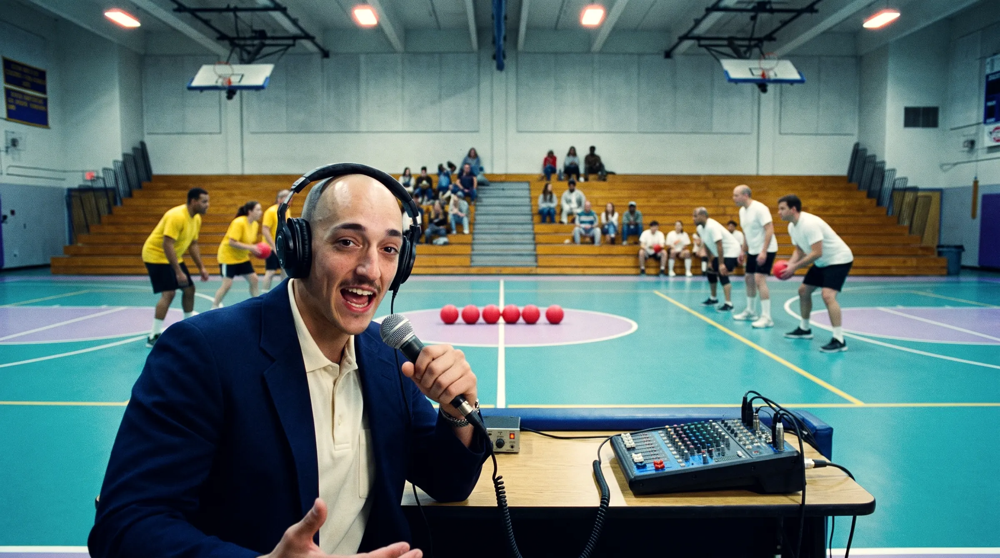
6. El evento.
Semis y final, con dos relatores que lo cuentan como una final del mundo.
Semis
Final
Red Bull le pone el nombre al torneo.
- La cancha y las equipaciones llevan la marca.
- Proponemos publicar los capítulos en colaboración con las cuentas de Red Bull.
- Último en Pie es nuestro nombre de trabajo. El definitivo lo elegimos con ustedes.
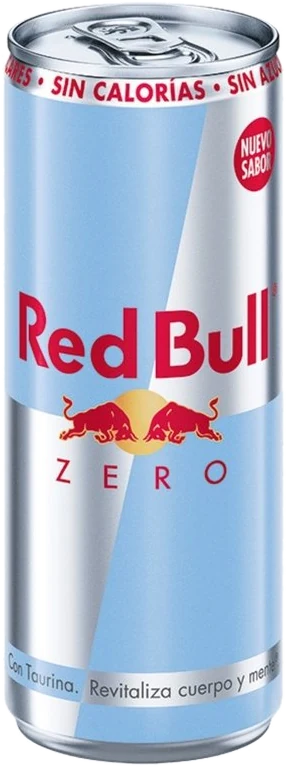
Falta el pitazo de ustedes.
Si les gusta la idea, armamos el presupuesto y definimos con ustedes capitanes, jugadores, sede y fecha.